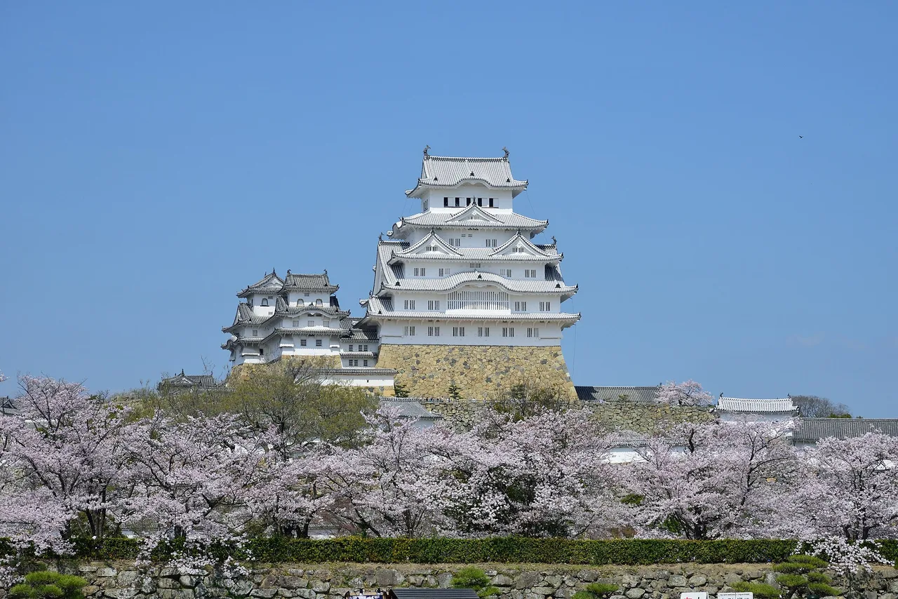

Japanese castle model kits: build Himeji, Nagoya & Kumamoto Castle at home
If you've stood under Himeji Castle's white keep — or worked through a castle-stamp pilgrimage like the one in our Japan's 100 Famous Castles guide — you know the itch: you want one of these buildings on your shelf. The good news is that Japan has a model maker best known for exactly this, Doyusha (童友社), whose plastic kits of Himeji, Nagoya, Kumamoto and other famous castles have been in production for decades, and there's also a pocket-size metal option for people who don't own a single hobby tool. The honest news: these kits differ a lot in size, difficulty, and how much glue-and-paint work they expect, and the listings rarely make that clear in English. This guide compares five realistic options — what each demands, what each does badly, and which one actually fits you.

How to choose: three things that actually matter
1. Read the finished size, not the scale. The Doyusha kits in this guide come in 1/500 and 1/350, but scale alone won't tell you how much shelf they take, because each kit includes a different amount of base and grounds around the keep. Going by the makers' published finished sizes: the standard 1/500 Himeji is about 21 × 16 cm, the 1/350 Nagoya about 24 × 14.5 cm, the Premium Himeji about 26.5 × 20.5 cm with its larger grounds, and the 1/350 Kumamoto is the giant of the group at about 33.5 × 22 cm. The Metal Earth version is smaller than any of them: a palm-size desk piece, not a diorama. Check the 完成サイズ (finished size) line on the listing before you clear a shelf.
2. "Pre-colored" is not "pre-finished." Doyusha molds its castle kits in colored plastic (white walls, dark roofs, grey stone), so an unpainted build still reads as the castle from across the room. But these are traditional plastic kits: expect to need plastic cement, and know that painting and panel-lining are what separate an okay result from the box-art photo. Exact contents and glue requirements vary by kit and production run — check the listing or box before you buy, and budget for basic supplies if you don't own them.
3. Instructions are in Japanese. Doyusha kits are made for the Japanese domestic market. The instruction sheets are diagram-driven — many overseas builders finish them fine using the pictures alone — but if written step-by-step English guidance is a dealbreaker, the Metal Earth kit (a US product with English instructions) is the safer pick.
At a glance
| Kit | Scale | Material | Glue / paint | Price band | Best for… | Find it |
|---|---|---|---|---|---|---|
| Doyusha Himeji Castle S21童友社 1/500 姫路城 | 1/500 | Pre-colored plastic | Cement yes · paint optional | $$ | First castle kit, classic subject | Check price → |
| Doyusha Premium Himeji ("National Treasure")プレミアム姫路城 | 1/500 | Pre-colored plastic, more parts | Cement yes · paint still recommended | $$$ | The fuller diorama — grounds & trees | Check price → |
| Doyusha Nagoya Castle S23童友社 1/350 名古屋城 | 1/350 | Pre-colored plastic, gold shachihoko | Cement yes · paint optional | $$ | The green-and-gold Nagoya icon | Check price → |
| Doyusha DX-7 Kumamoto Castle童友社 1/350 熊本城 | 1/350 | Pre-colored plastic, deluxe series | Cement yes · paint optional | $$$ | The dramatic black castle, large format | Check price → |
| Metal Earth Himeji Castleメタルアース 姫路城 | Palm-size | Laser-cut steel sheets | No glue, no paint — tweezers instead | $ | Entry point & easy gifting | Check price → |
The "Check price" links are affiliate links (Amazon). We may earn a small commission at no extra cost to you, and it never changes what we recommend.
Note: Doyusha kits on amazon.com are mostly imported by third-party sellers, so individual listings come and go and prices swing. That's why the Doyusha links above go to a live search rather than a single listing — compare the sellers you find there.
The kits, honestly reviewed
Doyusha 1/500 Himeji Castle (S21) — the classic first castle kit
Himeji is the obvious first subject: a UNESCO World Heritage site, a National Treasure, and the "White Heron Castle" whose keep survived the centuries largely intact — the building most people picture when they hear "Japanese castle." Doyusha's 1/500 kit is the long-running standard way to build it. Parts come molded in white, dark grey and stone colors, so even a straight, unpainted build looks like Himeji on the shelf, and the completed model is compact enough for a bookshelf or desk. The honest caveats: this is a traditional plastic kit, so plan on plastic cement (check the box for the current specification), the many small roof pieces demand patience, and without at least some panel-lining or light painting the plastic sheen gives it away up close. Instructions are Japanese-language diagrams.
✔ The most famous castle in Japan, at a manageable size · pre-colored plastic looks decent even unpainted · widely built, so photos and build logs are easy to find
✘ Needs plastic cement and basic tools · unpainted plastic sheen is visible up close · Japanese-only instructions · repetitive roof assembly
Best for: a first Japanese castle kit — especially if you've visited Himeji and want the memory in physical form. Skip it if: you want zero tools and zero glue — that's the Metal Earth kit below.
Doyusha Premium Himeji ("National Treasure" edition) — the fuller diorama
Doyusha's premium edition of the same 1/500 Himeji — the listing on amazon.com usually carries the "National Treasure" name — is not a different castle, it's a bigger production of it. Per Doyusha's own product information, the box roughly doubles down on the setting: around 160 parts, a larger base that takes in more of the castle grounds, tree-making materials (sponge and two colors of powder), and a color instruction manual instead of the classic monochrome diagrams. The result fills roughly 26.5 × 20.5 cm of shelf — noticeably more than the standard S21 — and reads as a slice of the castle's world rather than a lone keep. Be clear-eyed about what "premium" doesn't mean: Doyusha states plainly that tools, cement and paint are not included and its box photos show painted builds, so this is a fuller project, not an easier or paint-free one.
✔ The most complete Himeji scene of the plastic options — grounds, trees and all · color instructions help non-Japanese-readers · a gift-worthy box
✘ Costs notably more than the standard S21 · bigger footprint than the S21, not the same · still a glue-and-patience build, and paint is what makes the trees and grounds sing · edition confusion is common on third-party listings
Best for: someone who wants Himeji as a scene, not just a tower, and enjoys the extra work that comes with it. Skip it if: you want the quickest respectable Himeji — that's the standard S21.
Doyusha 1/350 Nagoya Castle (S23) — the big green-roofed showpiece
Nagoya Castle is the flamboyant one: broad green roofs crowned by the famous golden shachihoko — the tiger-headed fish that have become the symbol of the city (the same golden icons you'll meet all over our Nagoya & Aichi collectibles guide). Doyusha's 1/350 kit renders the keep at a larger scale than the Himeji kits above, which means the building itself carries more visible roof and wall detail — though because this kit concentrates on the keep rather than sprawling grounds, its finished footprint (about 24 × 14.5 cm) is in the same shelf class as the 1/500 Himeji kits, not bigger. The gold shachihoko parts are the highlight of the box. Honest notes: the real castle's current keep is a postwar reconstruction (the original burned in WWII air raids), so you're modeling the modern landmark rather than a surviving original; the kit itself needs cement like its siblings; and at 1/350 any unpainted shortcuts are easier to see, not harder.
✔ Larger-scale keep = more detail on the building itself · golden shachihoko make it instantly recognizable · distinct look next to the white castles
✘ Glue required, Japanese instructions · larger parts show unpainted plastic more, not less · keep-focused base, so less "grounds" than the Premium Himeji
Best for: Nagoya fans and anyone who wants the green-and-gold icon on the shelf. Skip it if: you want a full castle-grounds diorama — that's the Premium Himeji or the Kumamoto DX-7.
Doyusha DX-7 1/350 Kumamoto Castle — the dramatic black castle
Where Himeji is white elegance, Kumamoto Castle is black drama: dark walls above steep, curved stone ramparts, one of the most powerful silhouettes in Japan. It's also a castle with a story — badly damaged in the 2016 Kumamoto earthquakes, it has been under a long, ongoing restoration since, with the rebuilt main keep open to visitors again while work on other structures continues. Building the model has become a quiet way fans keep the castle on their shelf while the real one heals. Doyusha's DX-7 is the deluxe-series 1/350 version — and the physically largest kit in this guide, finishing at roughly 33.5 × 22 cm of ramparts, moat and grounds around the keep (which, like Nagoya's, is itself a postwar reconstruction). It's also the most involved build here. The trade-offs scale with it — this is the biggest time commitment here, it needs cement and benefits most from painting, and as a deluxe import through third-party sellers its availability and pricing are the least predictable of the five. If Kumamoto is on your Japan itinerary, the city also hides the beloved One Piece statue trail — another post-earthquake recovery story worth pairing with a castle visit.
✔ Striking black castle few overseas builders own · deluxe 1/350 detail · a meaningful subject with a real recovery story
✘ The longest, most demanding build here · stock and pricing fluctuate on import listings · unpainted, the dark plastic flattens the details
Best for: builders who've finished a kit or two and want a centerpiece with a story. Skip it if: you're new to plastic kits — start with a 1/500 Himeji and come back.
Metal Earth Himeji Castle — no glue, no paint, one evening
Fascinations' Metal Earth Himeji is a different animal entirely: laser-etched steel sheets that you pop out, fold and slot together with tabs — no glue, no paint, no Japanese instructions. The finished piece is a small, silver, surprisingly crisp Himeji that sits happily on a desk, and it's the cheapest way into this whole hobby. Be honest with yourself about the word "easy," though: Metal Earth kits are fiddly rather than difficult. You'll want needle-nose pliers or tweezers, the tabs punish impatience (bent-and-rebent metal snaps), the sheet edges are genuinely sharp, and the maker rates these for teens and up — this is not a kit for young kids. It's also monochrome steel, so if you want Himeji's white walls, this isn't that.
✔ No glue, paint or hobby experience needed · English instructions · smallest footprint and lowest price band · reliable stock via major distribution
✘ Fiddly tabs — pliers/tweezers all but required · sharp metal edges, not for young children · silver steel only, no color · a desk piece, not a diorama
Best for: a first taste of castle building, office desks, and gifts. Skip it if: you want the white castle look or a large display model — that's what the Doyusha kits are for.
As a gift for a Japan lover
Castle kits gift unusually well, because they're an activity and a souvenir in one — but match the kit to the person, not to your own ambitions. For someone with no model-building background, the Metal Earth Himeji is the safe pick: low price band, English instructions, finished in an evening or two, and it won't sit guilt-inducingly in a closet. For a hobbyist who already builds (Gunpla, ships, miniatures), the Doyusha Premium Himeji is the box that feels special to receive — a subject they probably don't own, in a format they already know how to handle. For someone who just came back from Japan, pick the castle they actually visited; a Nagoya or Kumamoto kit lands harder than a generic choice precisely because it's their castle. Two practical warnings for gift-buyers: Doyusha instructions are in Japanese (fine for experienced builders, intimidating for novices), and third-party import listings can take weeks to ship — order well before the occasion.
The model looks better on a shelf next to the stamps. Japan's official "100 Famous Castles" pilgrimage — stamp book, castle-visit strategy and goshuin etiquette — is covered in our free guide: Japan's 100 Famous Castles & castle stamps →. Himeji, Nagoya and Kumamoto are all on the list.
The verdict: one pick per person
- First castle kit: Doyusha 1/500 Himeji (S21) — the classic subject at a forgiving size.
- The fullest castle scene: Doyusha Premium Himeji — grounds, trees and a color manual; more work, more world.
- The green-and-gold icon: Doyusha 1/350 Nagoya Castle — the golden shachihoko do the talking.
- Biggest presence & the builder's centerpiece: Doyusha DX-7 1/350 Kumamoto Castle — the largest kit here, demanding, dramatic, and a story to tell.
- No tools, small budget, or a gift: Metal Earth Himeji — one evening, no glue, English instructions.
The Japanese you'll meet on the box
| Japanese | Reading | Meaning |
|---|---|---|
| 城 | shiro / -jō | castle (Himeji-jō = Himeji Castle) |
| 天守 | tenshu | the main keep — the tower these kits model |
| 石垣 | ishigaki | stone ramparts — Kumamoto's are famous |
| 鯱 / 金鯱 | shachihoko / kinshachi | the roof-guardian fish; golden ones crown Nagoya Castle |
| 国宝 | kokuhō | National Treasure — Himeji's keep holds this status |
| 世界遺産 | sekai isan | World Heritage site |
| プラモデル | puramoderu | plastic model kit |
| 接着剤 | setchakuzai | glue / cement — the word to look for on the box |
| 塗装 | tosō | painting (a finished paint job is 塗装済み, tosō-zumi) |
Want words like these to stick? The free JLPT battle quiz drills vocabulary with spaced repetition.
Common questions
Q. Do Japanese castle model kits need glue and paint?
A. Doyusha's plastic kits generally need plastic cement, and while they're molded in colored plastic (so an unpainted build still looks like the castle), painting and panel-lining are what get you close to the box art. Contents vary by kit and production run, so check the listing or box. The Metal Earth Himeji needs neither glue nor paint — just tweezers or pliers and patience.
Q. Which Japanese castle model kit is best for a beginner?
A. With no model-building experience at all, start with the Metal Earth Himeji — no glue, no paint, English instructions. If you're comfortable with a traditional plastic kit, Doyusha's 1/500 Himeji (S21) is the classic first castle: a manageable size and the most famous subject.
Q. Are Doyusha castle kit instructions in English?
A. No — Doyusha kits are made for the Japanese market and the instructions are in Japanese. They're diagram-based, and many overseas builders complete them using the pictures alone, but if written English steps matter to you, the Metal Earth kit is the safer choice.
Q. What's the difference between the standard and Premium Doyusha Himeji kits?
A. Same castle, same 1/500 scale, but a bigger production. Per Doyusha's product information, the Premium edition has around 160 parts, a larger base covering more of the castle grounds, tree-making materials (sponge and powder) and a color instruction manual. It is not a paint-free shortcut — Doyusha lists tools, cement and paint as not included. Choose Premium for the fuller scene; choose the standard S21 for the quicker, cheaper build.
Q. How big are the finished castle models?
A. By the makers' published finished sizes: the standard 1/500 Himeji (S21) is about 21 × 16 cm, the 1/350 Nagoya about 24 × 14.5 cm, the Premium Himeji about 26.5 × 20.5 cm, and the 1/350 Kumamoto DX-7 is the largest at about 33.5 × 22 cm. The Metal Earth Himeji is a palm-size desk piece. Always check the finished-size line on the listing before ordering.
Q. Is Kumamoto Castle rebuilt after the 2016 earthquake?
A. Partially. The castle was badly damaged in the 2016 Kumamoto earthquakes and has been under a long-term restoration since; the repaired main keep has reopened to visitors, while restoration work on other walls and structures continues. Check the castle's official site for current access before visiting.
How we choose: this is an editorial comparison based on manufacturer specifications and long-running public user feedback — we have not been paid to place any product, and we note what each kit does badly as well as what it does well. Some links are affiliate links — we may earn a commission at no extra cost to you, and it never changes what we recommend or the price you pay. As an Amazon Associate, NihongoHub earns from qualifying purchases.